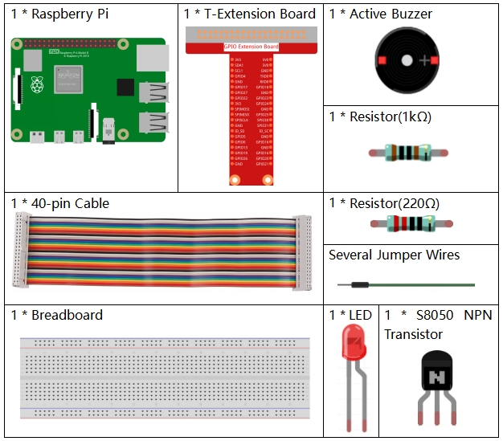

Note
Bonjour, bienvenue dans la communauté SunFounder pour les passionnés de Raspberry Pi, Arduino et ESP32 sur Facebook ! Plongez au cœur de l’univers du Raspberry Pi, de l’Arduino et de l’ESP32 avec d’autres passionnés.
Pourquoi nous rejoindre ?
Support d’experts : Résolvez les problèmes après-vente et les défis techniques avec l’aide de notre communauté et de notre équipe.
Apprendre et partager : Échangez des astuces et tutoriels pour développer vos compétences.
Aperçus exclusifs : Accédez en avant-première aux annonces de nouveaux produits et à des aperçus exclusifs.
Réductions spéciales : Profitez de réductions exclusives sur nos nouveaux produits.
Promotions et concours festifs : Participez à des concours et à des promotions spéciales pendant les fêtes.
👉 Prêt à explorer et créer avec nous ? Cliquez sur [Ici] pour nous rejoindre dès aujourd’hui !
3.1.11 Générateur de Code Morse
Introduction
Dans cette leçon, nous allons créer un générateur de code Morse, où vous saisissez une série de lettres anglaises sur le Raspberry Pi pour les convertir en signaux de code Morse.
Composants
Schéma de Câblage
T-Board Name |
physical |
wiringPi |
BCM |
GPIO17 |
Pin 11 |
0 |
17 |
GPIO22 |
Pin 15 |
3 |
22 |

Procédures Expérimentales
Étape 1 : Montez le circuit. (Faites attention aux pôles du buzzer : le côté avec l’étiquette « + » est le pôle positif et l’autre est le pôle négatif.)
{kind=link}
Étape 2 : Ouvrez le fichier de code.
cd ~/davinci-kit-for-raspberry-pi/c/3.1.11/
Étape 3 : Compilez le code.
gcc 3.1.11_MorseCodeGenerator.c -lwiringPi
Étape 4 : Exécutez le fichier exécutable ci-dessus.
sudo ./a.out
Une fois le programme lancé, tapez une série de caractères et le buzzer et la LED enverront les signaux de code Morse correspondants.
Note
Si cela ne fonctionne pas après l’exécution, ou s’il y a un message d’erreur indiquant : "wiringPi.h: Aucun fichier ou répertoire de ce type », veuillez vous référer à C code is not working?.
Explication du Code
struct MORSE{
    char word;
    unsigned char *code;
};
struct MORSE morseDict[]=
{
    {'A',"01"}, {'B',"1000"}, {'C',"1010"}, {'D',"100"}, {'E',"0"},
    {'F',"0010"}, {'G',"110"}, {'H',"0000"}, {'I',"00"}, {'J',"0111"},
    {'K',"101"}, {'L',"0100"}, {'M',"11"}, {'N',"10"}, {'O',"111"},
    {'P',"0110"}, {'Q',"1101"}, {'R',"010"}, {'S',"000"}, {'T',"1"},
    {'U',"001"}, {'V',"0001"}, {'W',"011"}, {'X',"1001"}, {'Y',"1011"},
    {'Z',"1100"},{'1',"01111"}, {'2',"00111"}, {'3',"00011"}, {'4',"00001"},
    {'5',"00000"},{'6',"10000"}, {'7',"11000"}, {'8',"11100"}, {'9',"11110"},
    {'0',"11111"},{'?',"001100"}, {'/',"10010"}, {',',"110011"}, {'.',"010101"},
    {';',"101010"},{'!',"101011"}, {'@',"011010"}, {':',"111000"}
};
Dans ce programme, une structure MORSE est définie pour associer chaque lettre et symbole à sa représentation en code Morse. morseDict est un tableau de ces structures, où chaque élément représente une lettre ou un caractère spécial avec son code Morse correspondant.
Cette structure MORSE constitue le dictionnaire du code Morse, contenant les caractères de A à Z, les chiffres de 0 à 9 ainsi que les symboles « ? » « / » « : » « , » « . » « ; » « ! » « @ ».
char *lookup(char key,struct MORSE *dict,int length)
{
    for (int i=0;i<length;i++)
{
if(dict[i].word==key){
            return dict[i].code;
}
}
}
La fonction lookup() fonctionne comme une « recherche dans le dictionnaire ». Elle prend un key en paramètre, recherche la correspondance dans la structure morseDict et renvoie le code Morse associé.
void on(){
digitalWrite(ALedPin,HIGH);
digitalWrite(BeepPin,HIGH);
}
Création d’une fonction on() pour allumer le buzzer et la LED.
void off(){
digitalWrite(ALedPin,LOW);
digitalWrite(BeepPin,LOW);
}
La fonction off() éteint le buzzer et la LED.
void beep(int dt){
on();
delay(dt);
off();
delay(dt);
}
Définition de la fonction beep() pour faire sonner le buzzer et clignoter la LED avec un intervalle de temps dt.
void morsecode(char *code){
    int pause = 250;
    char *point = NULL;
    int length = sizeof(morseDict)/sizeof(morseDict[0]);
    for (int i=0;i<strlen(code);i++)
{
point=lookup(code[i],morseDict,length);
        for (int j=0;j<strlen(point);j++){
            if (point[j]=='0')
{
beep(pause/2);
            }else if(point[j]=='1')
{
beep(pause);
}
delay(pause);
}
}
}
La fonction morsecode() génère le code Morse des caractères saisis. Chaque « 1 » du code produit un son ou une lumière longue, et chaque « 0 » un son ou une lumière courte. Par exemple, pour l’entrée « SOS », le signal sera : trois courts, trois longs, puis trois courts « · · · - - - · · · ».
int toupper(int c)
{
    if ((c >= 'a') && (c <= 'z'))
        return c + ('A' - 'a');
    return c;
}
char *strupr(char *str)
{
    char *orign=str;
    for (; *str!='\0'; str++)
        *str = toupper(*str);
return orign;
}
Avant de coder, il est nécessaire de convertir toutes les lettres en majuscules.
void main(){
setup();
    char *code;
    int length=8;
    code = (char*)malloc(sizeof(char)*length);
    while (1){
        printf("Please input the messenger:");
delay(100);
scanf("%s",code);
code=strupr(code);
printf("%s\n",code);
delay(100);
morsecode(code);
}
}
Lorsque vous saisissez les caractères avec le clavier, code=strupr(code) convertit les lettres en majuscules.
La fonction printf() affiche ensuite le texte en clair sur l’écran de l’ordinateur, et morsecode() fait émettre le code Morse par le buzzer et la LED.
À noter que la longueur des caractères saisis ne doit pas dépasser la valeur de length (modifiable).